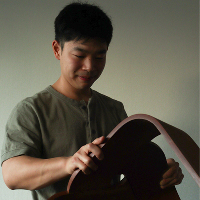
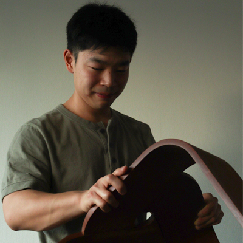

Fudan
Instrumentos para la preparación simbolica del té, dentro del ritual en la ceremonia japonesa del té.
Creando una sinestesia entre lo que hacemos, vemos y sentimos, en pos de lograr un cambio de estado gradual del ánimo de la persona que viva la experiencia de usar estos instrumentos de té.
Materialidad: vidrio de borosilicato.
Collaborator: JM Irie / J. Muñoz
Renders: JM Irie
2021
 

<
>